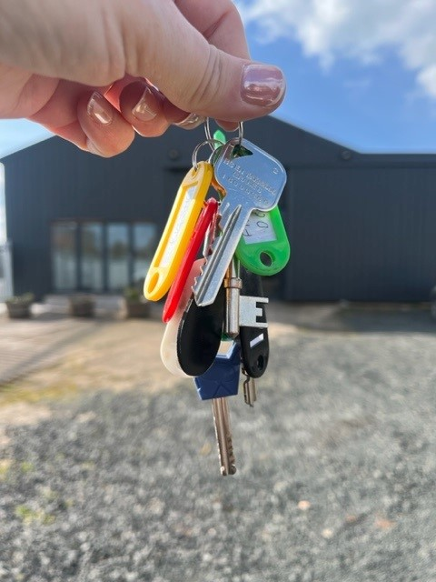
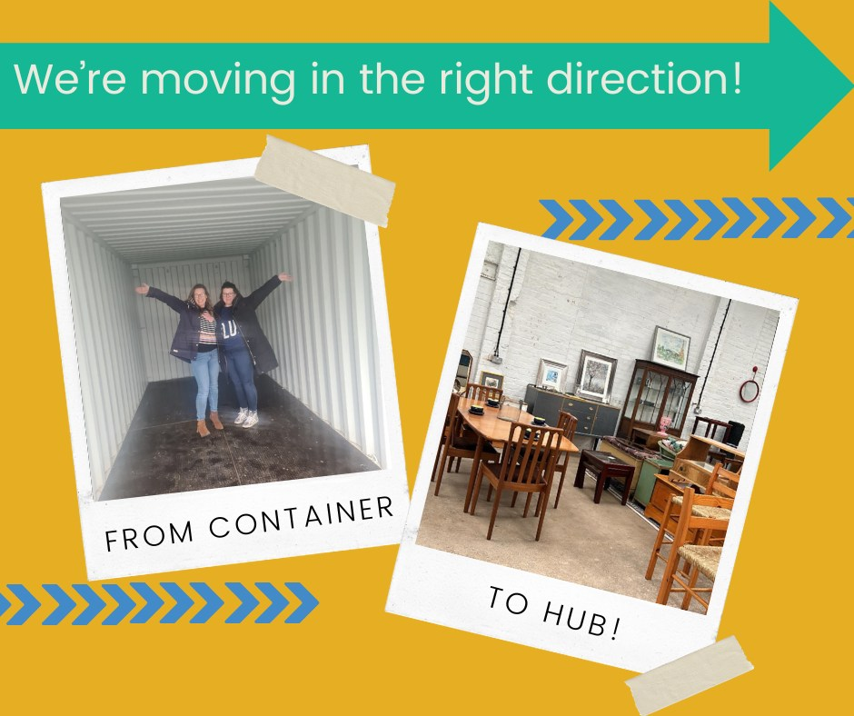

A selection of the work we've had the pleasure of supporting.



Developing a community-led reuse hub from concept to delivery
Overview
The Berwickshire Reuse Hub was set up to support circular economy principles, reduce waste and create community opportunities across Berwickshire.
The Challenge
Before the project, there was no reuse hub in the area. Getting it off the ground meant securing funding, developing partnerships and building an operational model that could actually sustain itself.
The Approach
As Project Manager at BAVS, Fi led the development from concept through to delivery. She secured National Lottery funding to support the initial six months and created two employed positions within the organisation. She developed a comprehensive business plan, established a Service Level Agreement with Scottish Borders Council to enable collection of reusable items from local waste sites and oversaw the setup of the physical space. Volunteering roles were developed with clear definitions and training, and a community workshop space was introduced to support people in building practical repair and reuse skills.
The Outcome
The Berwickshire Reuse Hub is now a well-established community asset — reducing waste, creating volunteering opportunities and supporting skills development and community connection.


Developing a sustainable income stream through a community-focused retail space
Overview
The Loop is a charity shop developed by Berwickshire Swap to generate sustainable income, create volunteering opportunities and divert waste from landfill.
The Challenge
The organisation needed to strengthen its financial resilience and reduce dependence on grant funding — which meant developing a new income model while also managing a significant move to new premises.
The Approach
As a trustee and Secretary of Berwickshire Swap, Fi played a key role in shaping the organisation's strategic direction and leading the development of the shop. Working closely with the Treasurer, she reviewed cash flow, developed a business plan with a clear model for growth and secured National Lottery funding to support startup and the first six months of operation. This created two new employed positions. Fi also supported the practical delivery: the move to new premises and the development of day-to-day operational systems.
The Outcome
The Loop has created a sustainable income stream for the organisation, strengthened its long-term financial position, diverted waste from landfill and expanded volunteering and community involvement.


Developing a creative and consistent social media presence
Overview
Grow with Thyme is a creative, wellbeing-focused business built around botanical casting, nature and reflection.
The Challenge
The business wanted a stronger and more consistent social media presence — one that stayed true to its calm, nature-led identity while also promoting workshops and driving bookings.
The Approach
Fi worked closely with the founder to develop a content approach that felt authentic to the brand. This included leading a rebrand: a new logo and cohesive branding kit to establish a clear, recognisable identity. That visual direction carried through to social media — Fi set up and managed the platforms, created regular content and developed a consistent written and visual style. She introduced a weekly "Thyme for Reflection" post to encourage engagement and build community connection, and supported workshop promotion through planned content and Eventbrite booking setup.
The Outcome
Grow with Thyme now has a clear brand identity and a consistent online presence. In the first 10 days after launch, the social media content reached over 1,500 people. Structured content and clear promotion has supported increased awareness of workshops and bookings.


Structuring and promoting a creative workshop programme
Overview
The Hive is a creative community space offering a range of workshops and classes.
The Challenge
There was a need to bring greater clarity to the workshop offer — making sessions easy to find, easy to understand and straightforward to book.
The Approach
Fi worked with the team to develop clear, engaging descriptions for seven different workshop sessions. She mapped out the full summer programme, creating a structured calendar that gave both the organisation and its audience a clear overview of what was available and when. She then set up the full programme on Eventbrite: individual listings, structured ticket options and a smooth booking experience.
The Outcome
The Hive now has a cohesive workshop programme with a structured calendar and an accessible booking system — improving visibility, streamlining bookings and giving ongoing promotion a solid foundation to build on.